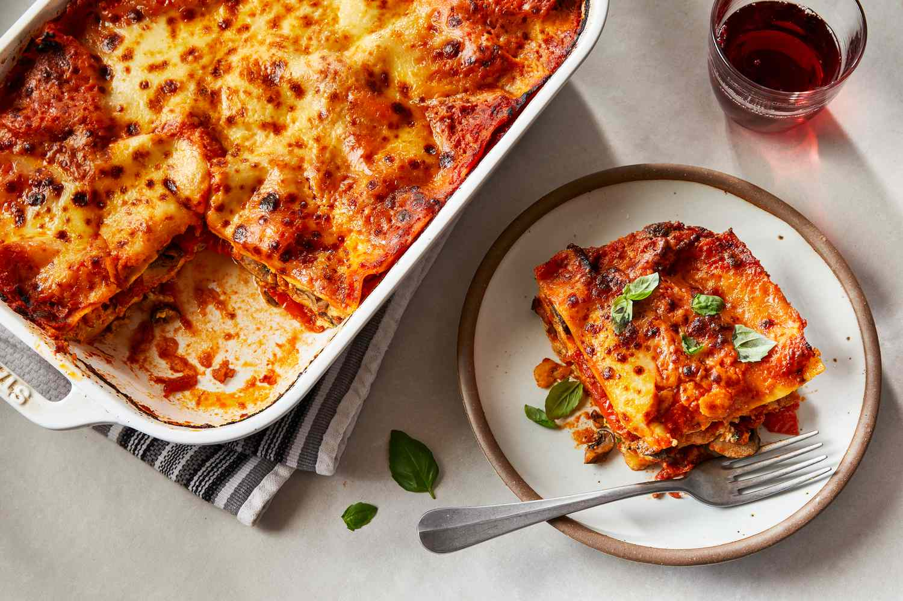

lasagna recipe

How to make a lasagna ?
Making lasagna can be time-consuming, but the results are well worth the wait. You'll find a detailed ingredient list and step-by-step instructions in the recipe below, but let's go over the basics:
How to Make Lasagna Step-By-Step
Here's a very brief overview of what you can expect when you make homemade lasagna:
- Make the meat sauce.
- the noodles.
- Make the ricotta mixture.
- Layer the lasagna according to the recipe instructions.
- Cover with foil and bake.
- Let the lasagna rest before serving.
lasagna ingredients
- meat
- onion and garlic
- tomato products
- suger
- Spices and seasonings:
- Lasagna noodles
- Cheeses
- Eggs